Explore Prague
A Brief History
Prague became the seat of Bohemian kings and, from 1344, an archbishopric centered on Prague Castle above the Vltava River. Charles IV expanded the New Town and founded Charles University in 1348. The Hussite wars and Habsburg rule followed, leaving Gothic, Renaissance, and baroque layers. Czechoslovak independence in 1918 and later division in 1993 kept Prague as the national capital. Its historic center is a UNESCO site.
Attractions Map
Top Sights & Activities
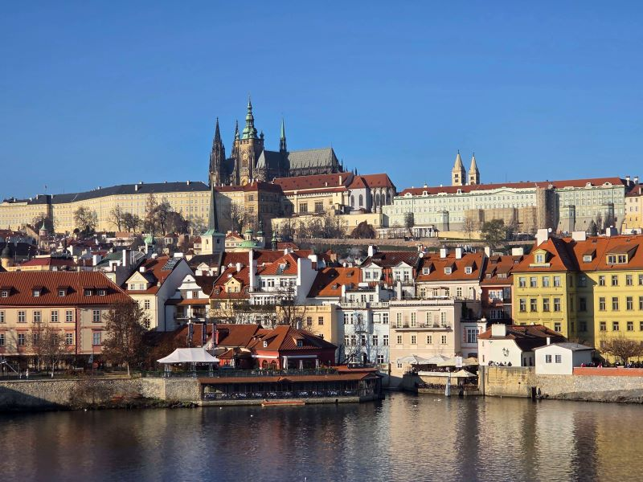
Prague Castle
Prague Castle is a castle complex in Prague, Czech Republic serving as the official residence and workplace of the president of the Czech Republic. Built in the 9th century, the castle has long served as the seat of power for kings of Bohemia, Holy Roman emperors, and presidents of Czechoslovakia. As such, the term "Prague Castle" or simply "Hrad" are often used as metonymy for the president and his staff and advisors.
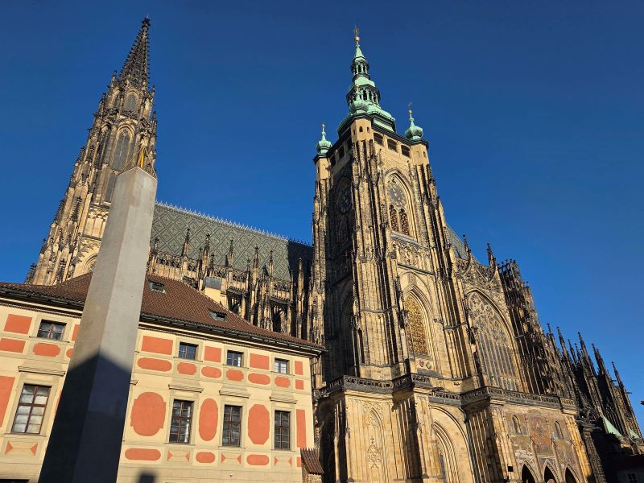
St. Vitus Cathedral
The Metropolitan Cathedral of Saints Vitus, Wenceslaus and Adalbert is a Catholic metropolitan cathedral in Prague, and the seat of the Archbishop of Prague. Until 1997, the cathedral was dedicated only to Saint Vitus, and is still commonly named only as St. Vitus Cathedral.
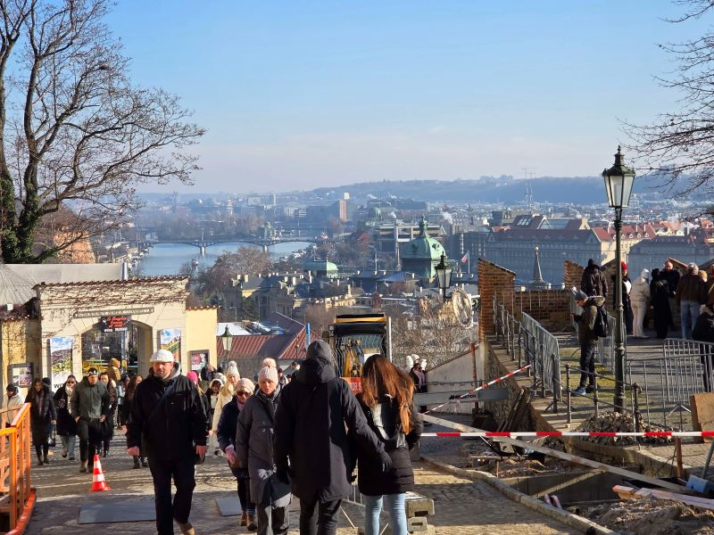
Zámecké schody
The historic 'Castle Stairs' wind directly up the steep hillside, historically serving as the primary pedestrian route connecting the Lesser Town to the gates of Prague Castle. The ancient stone steps offer scenic views of the surrounding red-tiled roofs.
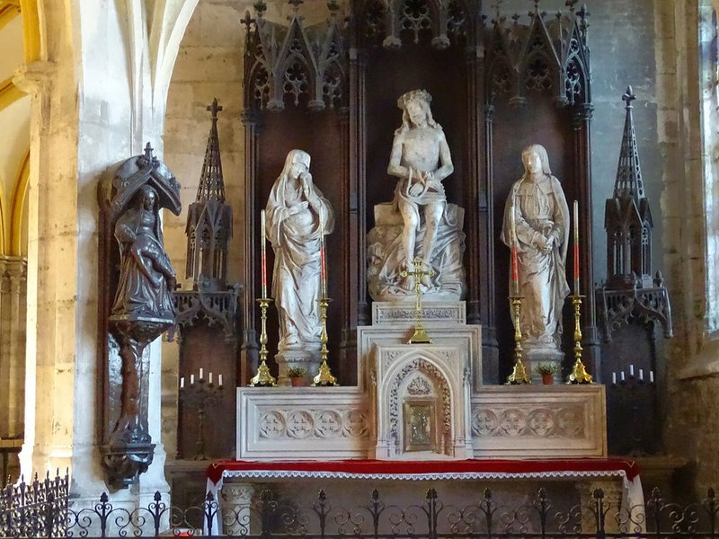
Church of Our Lady Victorious and The Infant Jesus of Prague
The Infant Jesus of Prague is a 16th-century wax-coated wooden statue of the Child Jesus holding a globus cruciger of Spanish origin, now located in the Discalced Carmelite Church of Our Lady of Victories in Malá Strana, Prague, Czech Republic. First appearing in 1556, pious legends claim that the statue once belonged to Teresa of Ávila and was consequently donated to the Carmelite friars by Princess Polyxena of Lobkowicz in 1628.
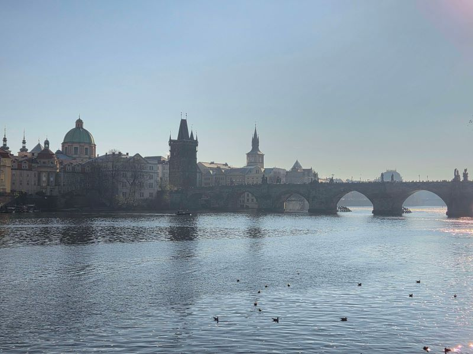
Charles Bridge
Charles Bridge is a medieval stone arch bridge that crosses the Vltava river in Prague, Czech Republic. Its construction started in 1357 under the auspices of King Charles IV, and finished in the early 15th century. The bridge replaced the old Judith Bridge built 1158–1172 that had been severely damaged by a flood in 1342.
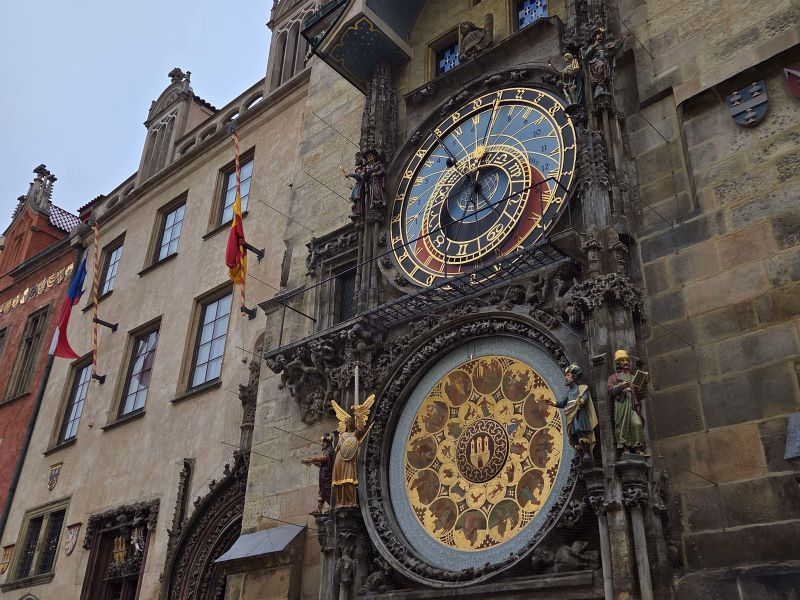
Prague Astronomical Clock
A historic, famously beautiful medieval clock spectacularly mounted directly on the Old Town Hall. It powerfully stands as the oldest wonderfully operating astronomical clock globally, drawing daily crowds.
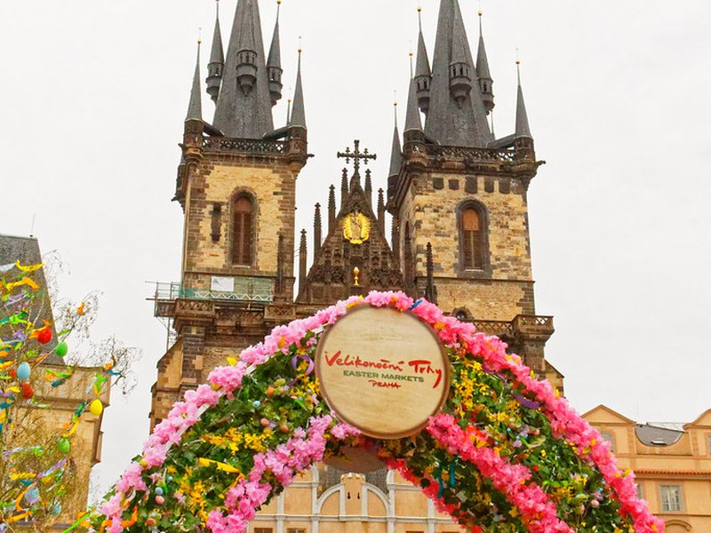
Staroměstské náměstí
The incredible historic, central square acting as the vibrant heart of the city since the 12th century. It famously showcases an, beautiful array of historic architectural styles.
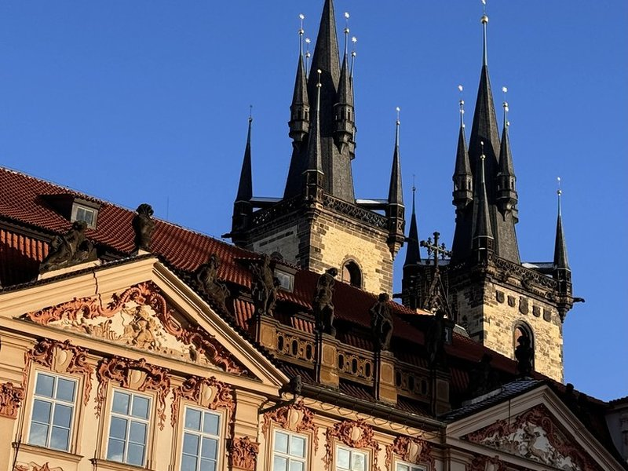
Church of Our Lady before Tyn
The Church of the Mother of God before Týn or just Týn), or Church of Our Lady before Týn, is a Gothic church and a dominant feature of the Old Town of Prague, Czech Republic. It has been the main church of this part of the city since the 14th century. The church's two towers are 80 m high, and each tower's spire is topped by eight smaller spires in two layers of four.
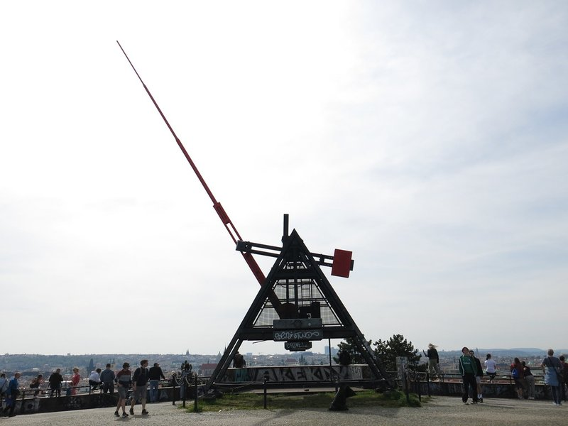
Prague Metronome
The Prague Metronome is a 75-foot-tall functioning metronome in Letná Park, overlooking the Vltava River and the city center of Prague. The kinetic sculpture was erected in 1991, on the plinth left vacant by the late-1962 demolition of an enormous monument to former Soviet leader Joseph Stalin. The silent red metronome was designed by international artist Vratislav Novák, and officially named "Time Machine".
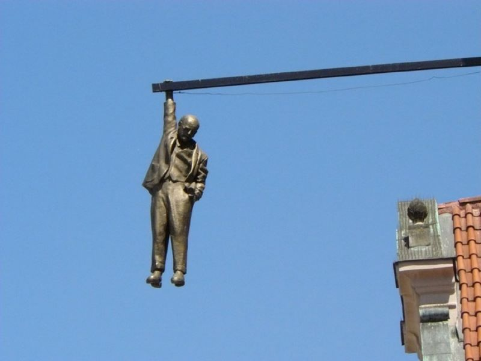
Man Hanging Out - David Černý's Statue of Sigmund Freud
A provocative public art installation created by Czech sculptor David Černý in 1996. Suspended high above a cobblestone street, the statue depicts the psychoanalyst holding on by one hand, symbolizing the intellectual anxieties of the 20th century.
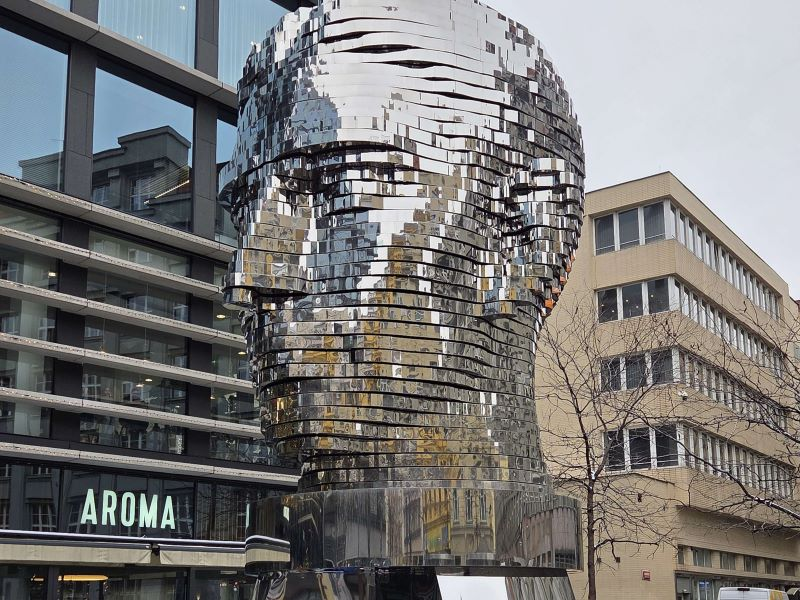
Franz Kafka
The Head of Franz Kafka, also known as the Statue of Kafka, is an outdoor kinetic sculpture by David Černý depicting Czech German-language writer Franz Kafka, installed on 31 October 2014 outside of the Quadrio shopping mall in Prague, Czech Republic. The price was 30 million crowns, paid by the investor CPI Property Group together with the adjacent Quadrio complex. Kafka himself worked in the nearby building of a saving bank.
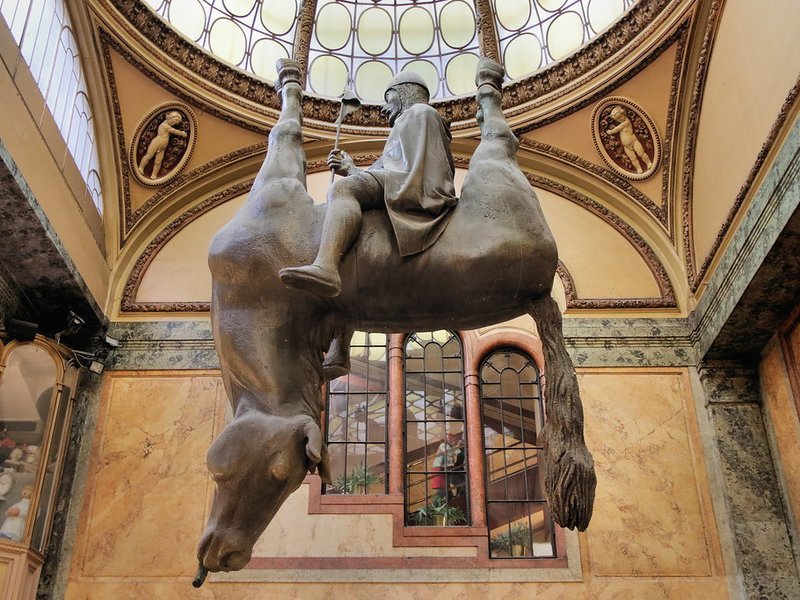
Statue of Saint Wenceslas Riding an Upside-Down Dead Horse
A satirical sculpture by David Černý displayed inside the Lucerna Palace. The piece subverts traditional Bohemian equestrian monuments by depicting the patron saint seated on the belly of an inverted, lifeless horse.